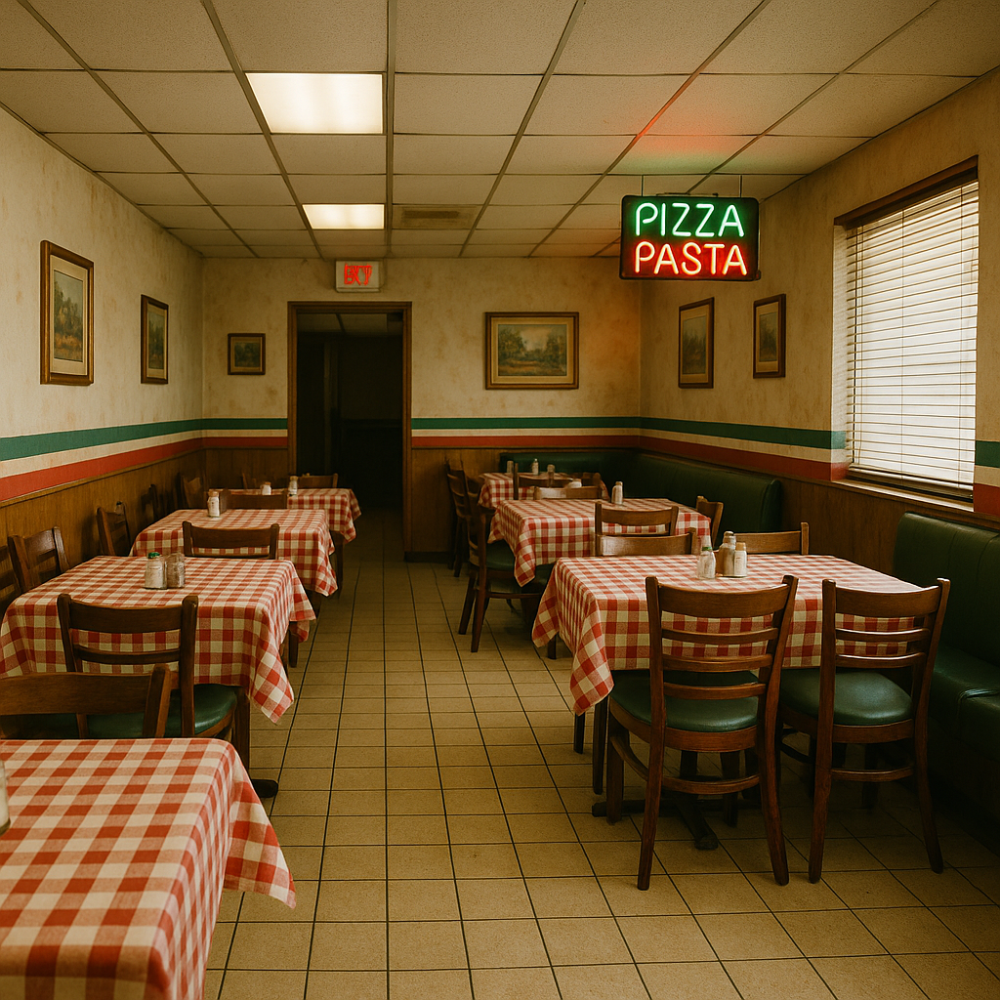

Mamma mia! You've reached the website of Grody's Italian Bistro, just off exit 5 on Main Street in Danbury, Connecticut! Stop in with the whole family, our pies are hot out of the oven. Try a classic House Garlic Martini. Bring the kids! We have non-alcoholic hot dogs like you wouldn't believe. From the famous Applesauce Parmesan to the Horseradish Risotto, you'll love every bite.